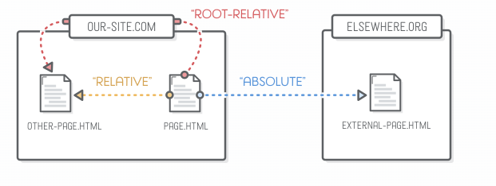
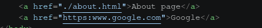
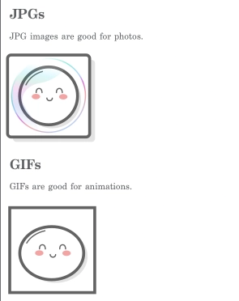
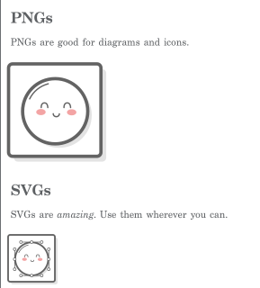

00 — Basic HTML
Struttura di una pagina, link, path e immagini in HTML
Sommario
HTML descrive la struttura e il significato del contenuto di una pagina web.
Il documento iniziale di un sito viene normalmente chiamato index.html, nome
che i web server cercano come risorsa predefinita di una directory.
Riferimento: elenco degli elementi HTML su MDN.
Boilerplate
In VS Code, l’abbreviazione Emmet ! genera il boilerplate di base.
<!doctype html>attiva la modalità standard del browser.langdichiara la lingua principale e aiuta screen reader, traduttori e motori di ricerca.<meta charset="UTF-8">imposta la codifica e deve comparire all’inizio di<head>.<meta name="viewport" ...>permette al layout di adattarsi correttamente alla larghezza dei dispositivi mobili.<title>definisce il titolo mostrato nella scheda e usato nei segnalibri e nei risultati dei motori di ricerca.
<!DOCTYPE html>
<html lang="en">
<head>
<meta charset="UTF-8">
<meta name="viewport" content="width=device-width, initial-scale=1.0">
<title>Document</title>
</head>
<body>
<h1>Hello world!</h1>
</body>
</html>
Commenti
In VS Code, Ctrl+/ attiva o disattiva il commento sulla selezione. In HTML i
commenti usano <!-- testo --> e non vengono mostrati nella pagina.
Link

Un URL assoluto contiene schema e host; un path relativo viene risolto rispetto
all’URL del documento corrente. Il prefisso ./ rende esplicita la directory
corrente, ma non è obbligatorio.
<!-- Link esterno aperto in una nuova scheda -->
<a href="https://www.theodinproject.com/about"
target="_blank"
rel="noopener noreferrer">About The Odin Project</a>
<!-- Link relativo alla directory del documento corrente -->
<a href="./pages/about.html">About</a>
Quando si usa target="_blank", noopener impedisce alla nuova pagina di
controllare quella di origine tramite window.opener; noreferrer rimuove
anche l’header HTTP Referer. Approfondimento: sicurezza e privacy del Referer su MDN.

Immagini
srcindica la risorsa da caricare.altfornisce un’alternativa testuale. Deve descrivere lo scopo dell’immagine; per un’immagine puramente decorativa si usaalt="".widtheheightdichiarano le dimensioni intrinseche e permettono al browser di riservare spazio prima del caricamento, riducendo il layout shift.
<!-- Absolute path -->
<img src="https://www.theodinproject.com/mstile-310x310.png"
alt="Logo di The Odin Project" width="400" height="400">
<!-- Relative path -->
<img src="./images/dog.jpg" alt="Un cane" width="400" height="400">


Gli attributi HTML width e height accettano numeri interi espressi in pixel
CSS, quindi non si scrive l’unità:
<img src="./images/dog.jpg" alt="A doggo" width="300">
- Se si specifica una sola dimensione, il browser mantiene il rapporto intrinseco dell’immagine.
- In CSS, invece, una lunghezza diversa da zero richiede normalmente l’unità,
per esempio
width: 300px. - Per schermi ad alta densità non basta raddoppiare sempre i pixel:
srcsetesizespermettono al browser di scegliere la risorsa più adatta.